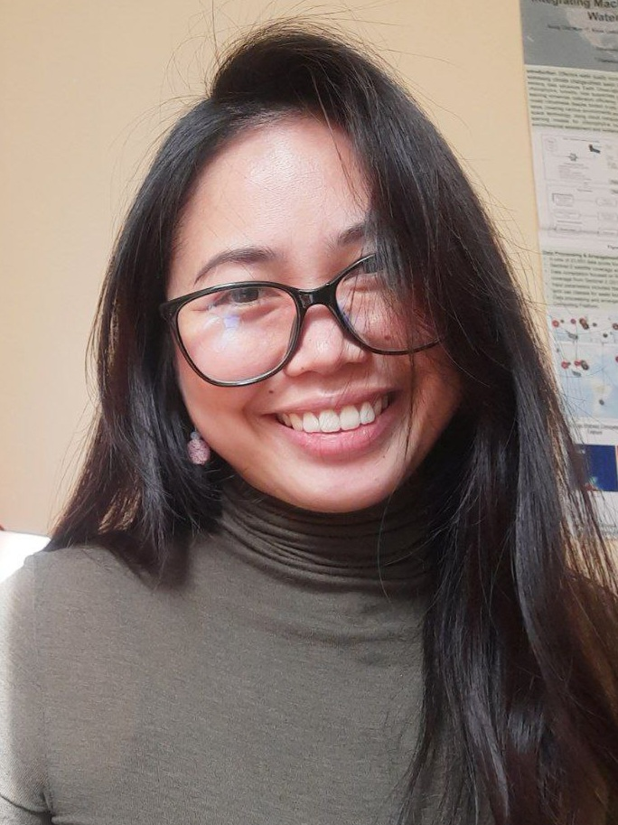

Research Fellow | Ph.D. Candidate | Inhinyera Sibil
Contact: khimcathleen.saddi@unina.it
Interdisciplinary researcher curious about sustainability focusing on how we can transform engineering to be socially sensitive, and generate a bigger impact through developing collaborativ environmental monitoring techniques.